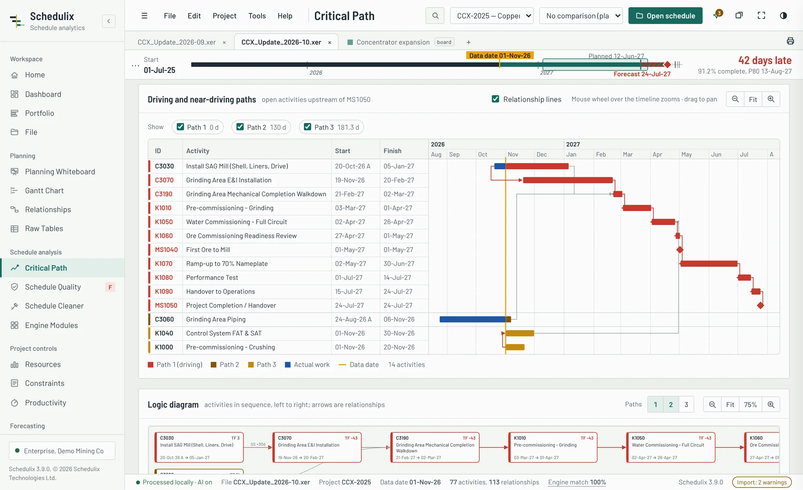

What Schedulix does
Schedulix is a web application for planners and project controls teams working with complex project schedules. It brings schedules from Primavera P6 and Microsoft Project into an interactive workspace where teams can inspect timelines, trace dependencies, compare schedule updates and evaluate delivery risk.
Suppose a completion milestone moves in the latest update. A planner can open the Gantt view to see the activities in context, trace the path driving the milestone, and check how much float the activities have. That helps the team identify which delays could affect the finish date and focus its discussion on the work that matters most.
I developed Schedulix with one other developer.
- ImportLoad a P6 or Microsoft Project schedule
- CompareSee what shifted in the latest update
- TraceFollow dependencies to a milestone
- PrioritizeUse float to identify activities needing attention
Product screenshots
The first view shows the schedule and the logic around a selected activity. The second follows the chain of activities driving a completion milestone.

